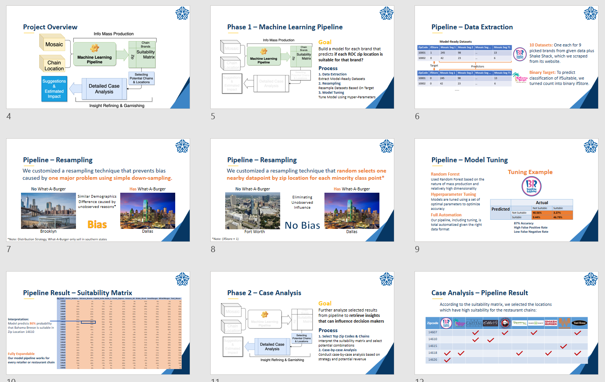

Feb. 2020 - May 2020
Chain Business Attraction Strategy
for City of Rochester
Analyzed data of 38,000+ locations, 20+ brands and US demographics to guide the City on attracting investment from national chain brands; built a machine learning pipeline that automates data ETL, feature selection and model tuning; recommended optimal locations for 10 chain brands using the predictive models.
Conducted analyses on market size, financial outcome, and community impact for the identified store location options to aid stakeholders’ decision making.

Dec. 2019
FICO
Explainable Machine Learning Challenge
Cleaned data of 10,000+ applicants and developed a predictive model to evaluate the risk of Home Equity Line of Credit (HELOC) applications; reached an accuracy of 74% with random forest model.
Built a website interface as the decision support system for bank representatives to directly estimate any new loan applicants and avoid default risk.
Oct. 2019
Humana-Mays Business School
Healthcare Analytics Case Competition
Cleaned 6+ million rows of unstructured raw data on 14,000 members of Humana; trained models to predict whether a patient will be addicted to opioid in the future.
Identified high-risk patients of continued long-term opioid use based on the addiction probability to help Humana with early intervention.